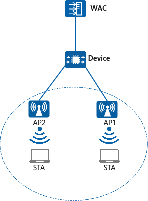

Basic configurations for wireless network access have been completed. For details, see Configuration Examples for WLAN STA Management.
An enterprise wants to enable users to access the network through WLANs, meeting the basic mobile office requirements. Additionally, the WLAN is required to ensure continuous services during STA roaming in the coverage area.
The enterprise requires that WLAN services not be interrupted even when APs switch their operating channels.

Item |
Data |
|---|---|
AP group |
|
2.4 GHz radio profile |
|
5 GHz radio profile |
|
<WAC> system-view [WAC] wlan [WAC-wlan] radio-2g-profile name wlan-radio2g [WAC-wlan-radio-2g-prof-wlan-radio2g] undo channel-switch announcement disable [WAC-wlan-radio-2g-prof-wlan-radio2g] quit [WAC-wlan] radio-5g-profile name wlan-radio5g [WAC-wlan-radio-5g-prof-wlan-radio5g] undo channel-switch announcement disable [WAC-wlan-radio-5g-prof-wlan-radio5g] quit
# Bind the 2.4 GHz radio profile and 5 GHz radio profile to an AP group.
[WAC-wlan] ap-group name ap-group1 [WAC-wlan-ap-group-ap-group1] radio-2g-profile wlan-radio2g radio 0 [WAC-wlan-ap-group-ap-group1] radio-5g-profile wlan-radio5g radio 1 [WAC-wlan-ap-group-ap-group1] quit
# When the channel of AP1 or AP2 is switched due to radio calibration for AP1 or AP2, service data forwarding for STAs in area A is not affected. Run the display radio all command to check the operating channels of all APs.
[WAC-wlan] display radio all CH/BW:Channel/Bandwidth CE:Current EIRP (dBm) ME:Max EIRP (dBm) CU:Channel utilization CCI/TX/RX/NF:Co-channel interference(%)/Transmit time ratio(%)/Receive time ratio(%)/Noise floor(dBm) ST:Status WM:Working Mode (normal/monitor/monitor dual-band-scan) CMD:Shut down by a command ERR:Shut down due to an error CAL:Shut down due to radio calibration LPC:Shut down due to insufficient power supply 3GPP:Shut down due to 3GPP restrictions Total:4 ------------------------------------------------------------------------------------------------------ AP ID Name RfID Band Type ST CH/BW CE/ME STA CU CCI/TX/RX/NF WM ------------------------------------------------------------------------------------------------------ 1 area_1 0 2.4G bgn on 11/20M 23/23 0 8% 8/-/-/-94 normal 1 area_1 1 5G an11ac on 149/20M 23/23 0 7% 7/-/-/-93 normal 2 area_2 0 2.4G an11ac on 1/20M 23/23 0 30% 30/-/-/-94 normal 2 area_2 1 5G an on 149/20M 23/23 0 21% 21/-/-/-93 normal ------------------------------------------------------------------------------------------------------